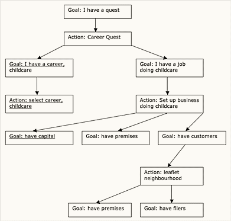

|
Ways to Look at Plans: Part 2by Richard Bartle I recommend you pull up the previous article when you read this one, as it's a direct continuations of it. OK, so we have Doris the dwarf, and she's made a plan. We can represent her reasoning diagrammatically as follows: 
The underlined bits have already been achieved, and the rest are at least partially unachieved.
This is a goal/action tree. The first line shows a goal, the next line shows the actions to be performed that will achieve the goal, the next line is the goals that must be solved to enable the action to be performed, and so on. So, a player has asked Doris for a quest. Doris has chosen a quest for herself (the Career Quest) but she hasn't yet completed it. The player is to help her. What can she reply? Well, she can reply with any verifiable node from the goal/action tree, so long as it hasn't already been executed and isn't dependent on something else having been done first. She can make her selection based on how powerful the player is and how long the quest is to last, but basically the choices are:
Leaflet the neighborhood has a precondition of I have premises, therefore it is not an option - it has to be performed after the earlier "Get me some premises" goal has been satisfied. "Get me some fliers" is also not an option, because it's a part of leafleting the neighborhood. "Get me some customers" is am option because there is no assumption that it has to be done before getting premises - enterprising players could achieve it by some mechanism not considered yet by Doris, eg. door-stepping. Assuming the player only wanted a short quest and wasn't all that high a level, Doris would probably ask that they arrange some premises for her. She will pay them 500GP upon completion (therefore the player will probably not want to spend more than 500GP of their own money on obtaining a lease, or they'll make a loss). Should the player perform the task, a new one will naturally follow from it: get some fliers made. If they do that, they can then leaflet the neighborhood, which will satisfy Doris's overall goal of having a career in childcare. Any subsequent quests they demand from her will be generated from a new goal made with her childcare activities borne in mind. Quest ElementsThe quest elements (ie. the actions, in AI planning terms) making up quests must be written carefully. The first precondition for the Career Quest, for example, isn't actually needed, but (assuming preconditions are tackled in order) putting it first makes the rest of the process run quicker - it wouldn't have to be re-run every time Doris's attempts to find a job were unsuccessful. Similarly, the Xisn't me precondition for work for X doing Y could be dropped and Doris would still eventually realize that she could work for herself; it's just something of a pain to implement this kind of variable binding efficiently. In designing quest elements, there's an issue of when to stop breaking an action down (via ever-more finicky goals) into sub-actions. Should there be several ways to get fliers (get them printed, make them yourself, change someone else's fliers)? If you made them yourself, would you have to buy the paper and the pencils? If so, how would you get to the stationary store - walk, take your dwarven warhorse, call for a taxi? If you walk, what route do you take? At some stage, you have to stop the planning process and determine that an action can be "just done". Thus, there are three kinds of actions used for quest elements:
There's a lot more to quest elements than I've written here, and than I could write here if I spent a dozen more articles on it. I haven't mentioned time, I've only alluded vaguely to variable binding, and I've made all kinds of assumptions about hardwiring that will have people who know about AI planning frowning in annoyance. I hope, however, to have given you enough of a taste of this that you'll be tempted to explore the area further when it comes to writing quest systems of your own. Next time, I'll talk about some of the other things you can do with this machinery.
|